Kinetic Clarity — unofficial Nike product page redesign.
A Vulcet studio experiment, not a client project. One floating product card. Real Nike models across Women, Men and Kids — with colorways that change the room around them. Not affiliated with Nike, Inc., and nothing here is for sale.
The study asks a simple question: if the shoe is the hero, how little else does the interface need — and how cleanly can audience, color and atmosphere move together?
- Type
- Studio experiment
- Focus
- Product UI, motion, catalog flow
- Scope
- Women · Men · Kids
- Status
- Interactive concept — not for sale
Most product pages feel like shelves. We wanted a stage.
Catalog browsing often splits the product from the mood around it. Kinetic Clarity keeps the shoe large, the chrome light, and the canvas reactive — so switching audience or colorway feels like stepping into a different room, not loading another SKU tile.
One card. Three audiences. Color that leads.
Women, Men and Kids each carry three models, and each model keeps three true colorways — same silhouette, different finish. Soft backgrounds shift with the swatch. Cutouts float with drop shadow instead of sitting on white studio plates. Size selection stays secondary; the product stays first.
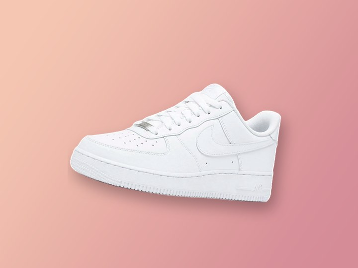
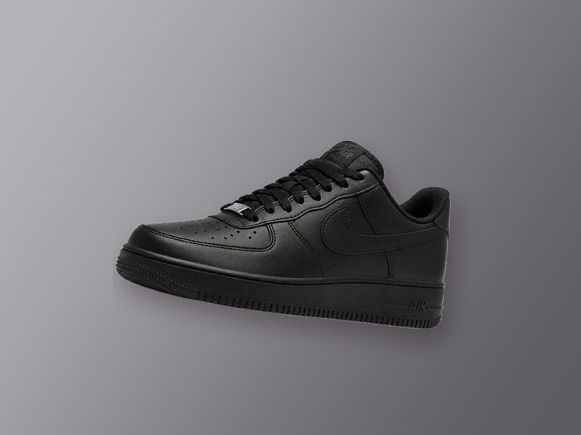
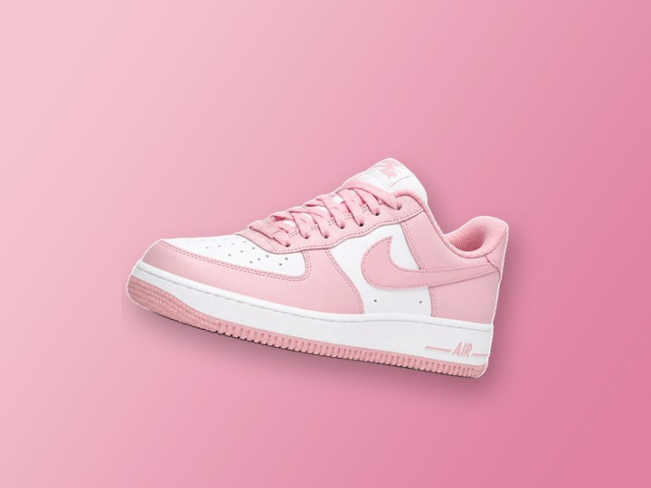
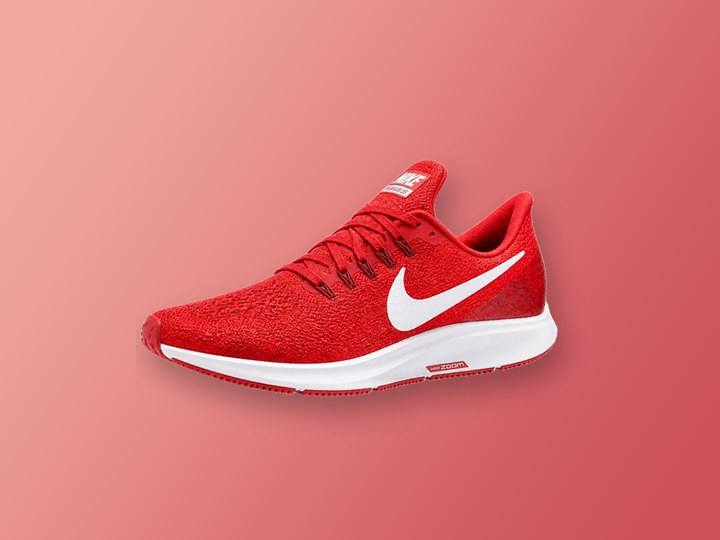
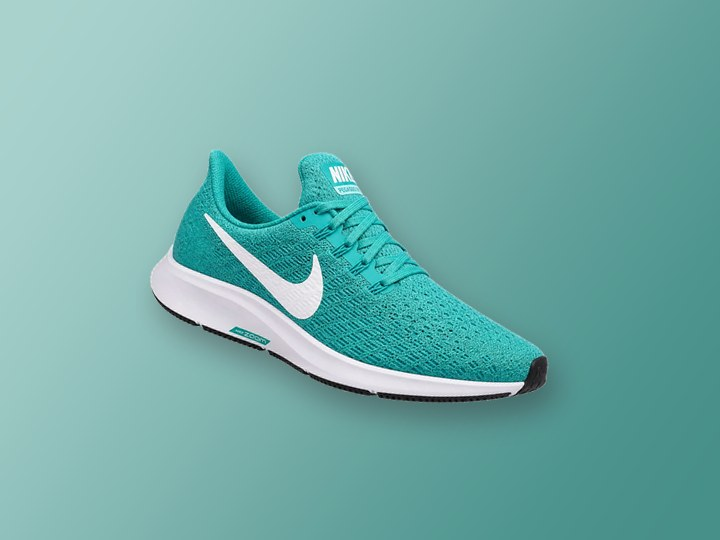
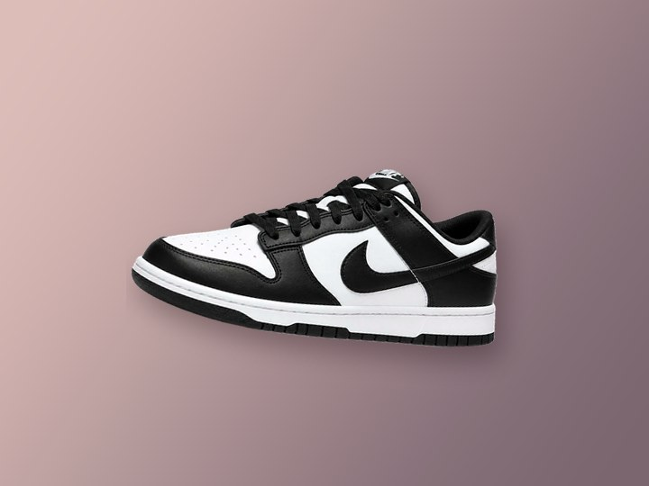
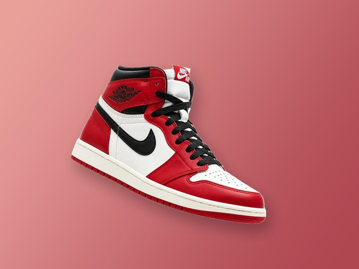
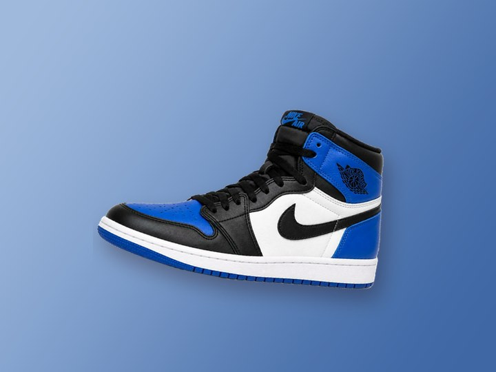
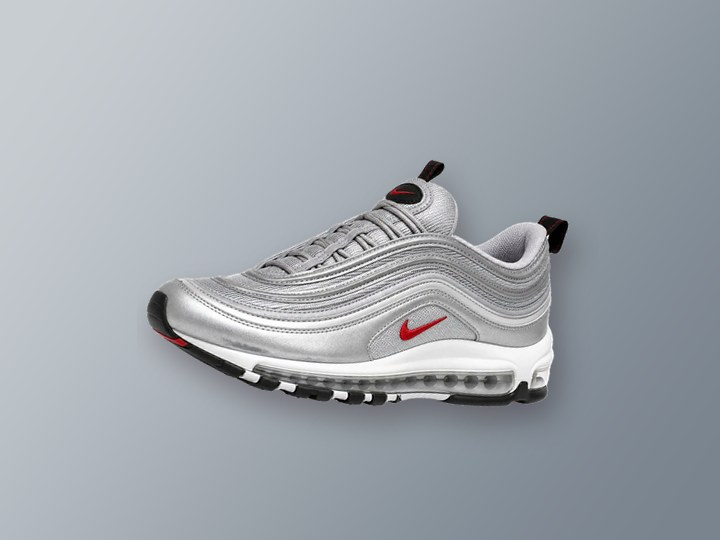
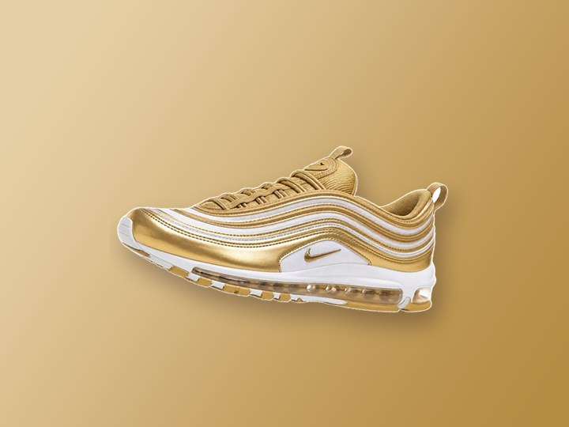
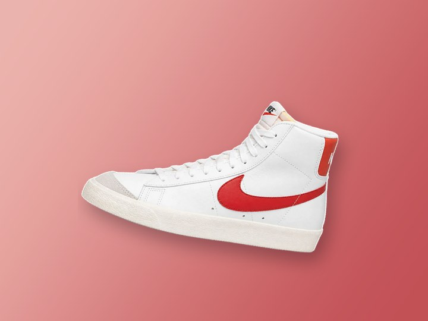
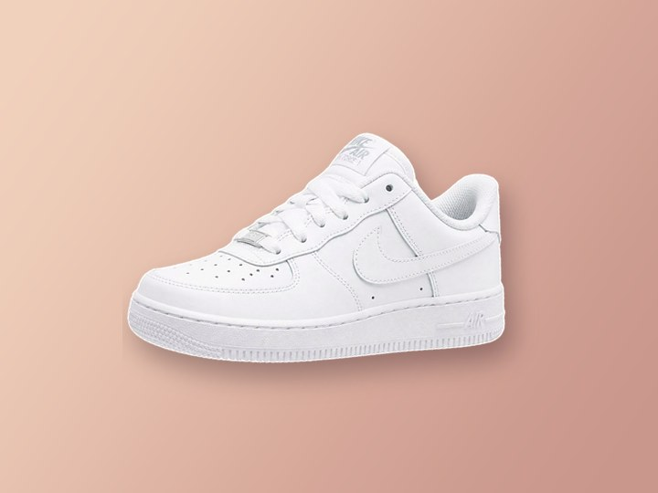
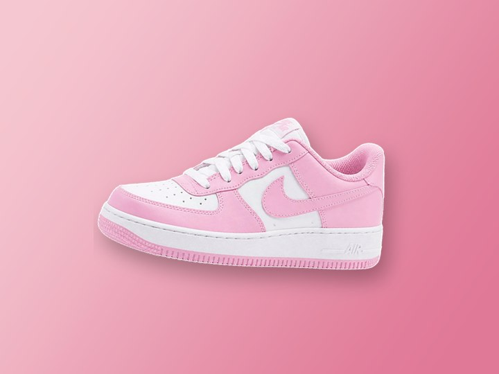
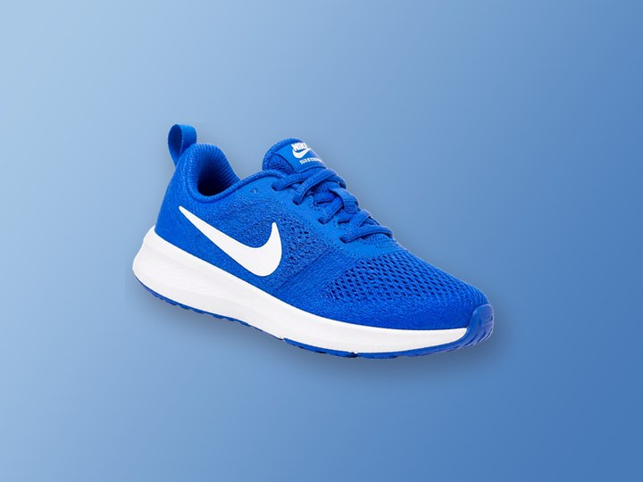
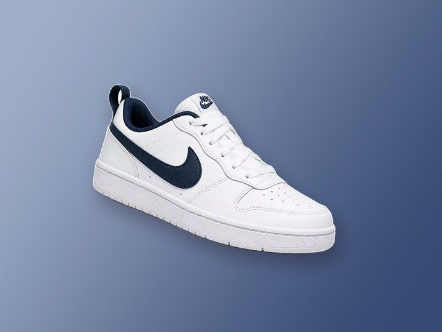
Restraint in the frame. Energy in the product.
The stage is large but not edge-to-edge — a floating card that still feels held. Motion is quiet: soft float, gentle tilt, theme fades. On smaller screens, cards stack cleanly so nothing collides. White leather and midsoles stay intact when backgrounds are removed; the cut is for atmosphere, not for erasing the shoe.
A Vulcet study — clearly unofficial.
Kinetic Clarity is a studio experiment. It is not affiliated with Nike, Inc., and nothing here is for sale. The point is craft: how a product interface can feel kinetic, clear, and brand-led without turning into a dashboard.
Open the live experiment.
Move through Women, Men and Kids — then watch the canvas follow the colorway.
Launch Kinetic Clarity All redesigns